Plugin de Componentes
El plugin de Componentes es parte de la solución UML+ para la realización de diagramas según la especificación UML 2.0, este diagrama genera archivos con la extensión ".dcm" . Este diagrama permite mostrar los componentes y sus interrelaciones en un sistema.
Los elementos propios de este diagrama son:
- Componente
- Sistema
- Interfaz
- Interfaz Requerida
- Interfaz Proveída
- Puerto
- Relación de Dependencia
- Relación de Realización
- Enlace Puerto a Puerto
Componente
El componente es uno de los elementos de modelamientos mas importantes de este diagrama. Representa un subsistema modelado como un elemento reutilizable. Para agregar un componente se debe seleccionar el icono en forma de rectángulo rojo de la barra específica del marco.
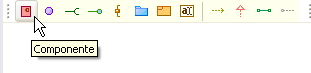
Figura 1. Botón de creación de componente
Al crear el elemento se debe suministrar como mínimo un nombre único dentro del diagrama, opcionalmente se puede agregar o escoger un estereotipo para el componente, la versión y el autor del mismo. A los componentes es posible agregarle un perfil bien sea desde el punto de vista de Ingeniero de Componentes o Arquitecto.
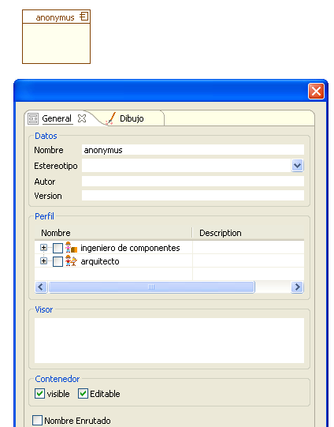
Figura 2. Ventana para ingreso de datos de creación de componente
Dentro de un componente es posible crear otros componentes que hacen parte de este. Para crear un componente dentro de otro basta con crearlo de manera normal y seleccionar un punto dentro del componente general al momento de generarlo.
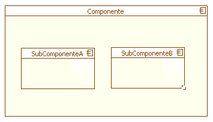
Figura 3. Representación de componente anidado
Sistema
El Sistema en este diagrama cumple una función similar al desarrollado en los plugins de Artefactos y Clases. De la misma manera que en los otros plugins el icono corresponde a un folder azul en la barra específica del marco.

Figura 4. Botón de creación de sistema
El sistema posee los mismos parametros de creación y configuración que para el caso de los otros plugins, es decir proporcionar el nombre y los parametros opcionales (Estereotipo, Autor, Versión, Ubicación y Perfil)
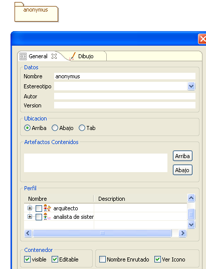
Figura 5. Ingreso de datos para creación de sistema
Con la ubicación por defecto, un sistema dentro del Diagrama de Componentes se ve como se muestra en la siguiente imagen.
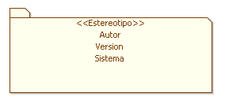
Figura 6. Representación de un sistema
Interfaz
La interfaz en el Diagrama de Componentes es representado por
un circulo . Con el botón lila en forma de circulo es posible crear una
intefaz no asociada a ningún componente dentro del diagrama
(posteriormente se pueden realizar las asociaciones deseadas).
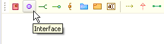
Figura 7. Botón de creación de una interfaz
La Interfaz posee los elementos comunes de configuración e igualmente es posible asignarle un perfil, de entre un conjunto de patrones y antipatrones aplicables..
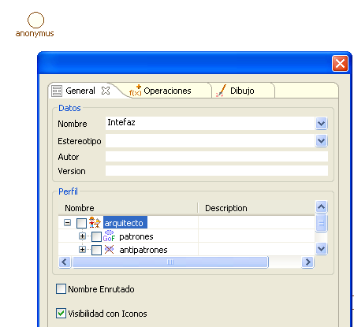
Figura 8. Configuración de una interfaz
Asociados a la interfaz se puden crear un conjunto de operaciones, a través de la pestaña Operaciones. Para agregar una operación se debe suministrar un nombre a esta, escoger un retorno y opcionalmente los argumentos de la misma. Para asociar un argumento a la operación se selecciona el botón agregar en el área Argumento.
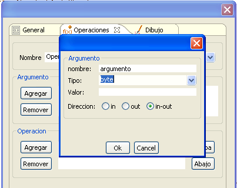
Figura 9. Agregando operaciones a una interfaz
El argumento posee un nombre, un tipo, un valor por defecto y una dirección. El nombre puede ser repetido dentro de una misma operación, el tipo puede ser escogido dentro de los que se proveen en la lista desplegable o escribir el tipo particular que se desee. El valor es opcional para indicar el valor por defecto del argumento y por último la dirección, donde se muestra si es de entrada, salida o ambos.
Por ultimo se selecciona Ok y el argumento aparecerá listado dentro de los pertenecientes a la operación. Para finalizar se da agregar en el área de Operación y ésta será agregada con todos los argumentos que esten listados en las operaciones de la interfaz.
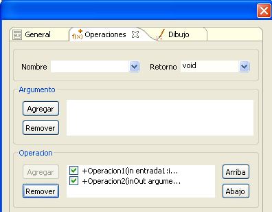
Figura 10. Listado de operaciones en la interfaz
Una vez finalizada la intefaz, esta se puede observar en forma completa, donde se muestran todas las operaciones (parte izquierda de la imagen) y en forma compacta, donde solo se muestra el nombre y el icono correspondiente (parte derecha).
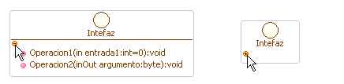
Figura 11. Representación de las operaciones de la interfaz
I interfaz Requerida
Esta es un tipo de interfaz que indica que el componente asociado necesita de una funcionalidad que puede ser provista a través de ésta. Para crear un interfaz Requerida se debe seleccionar el icono en forma de segmento de línea conectado con media circunferencia de la barra específica del marco
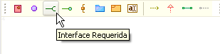
Figura 12. Botón para creación de interaface requerida
La Interfaz Requerida posee los mismos elementos de creación que la Interfaz general. Al igual que con ésta es posible asociarle un perfil y operaciones.
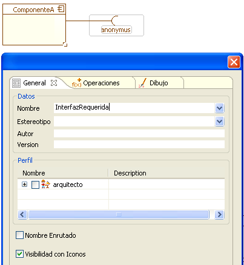
Figura 13. Datos de creación de una interfaz requerida
Al crear la Interfaz Requerida, es posible conectarla con una Interfaz o Interfaz Proveida ya existente. Para el caso de la imagen se conecta la Interfaz Requerida del ComponenteA con la Interfaz creada anteriormente.
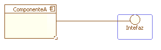
Figura 14. Representación de la interfaz requerida
Al hacerlo es posible configurar el Estereotipo de la relación, los roles de cliente y proveedor.

Figura 15. Configuración del estereotipo de la relación
Interfaz Proveída
Esta es un tipo de interfaz que indica que el componente asociado ofrece una funcionalidad a otros componentes a través de esta intefaz. Para crear un interfaz Proveida se debe seleccionar el icono en forma de segmento de línea con terminación en circulo verde de la barra específica del marco.
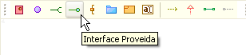
Figura 16. Botón de creación de interfaz proveída
Al igual que con la Interfaz y la Interfaz Requerida, la Interfaz Proveída permite asignarle Perfiles y Operaciones además de los parámetros usuales.
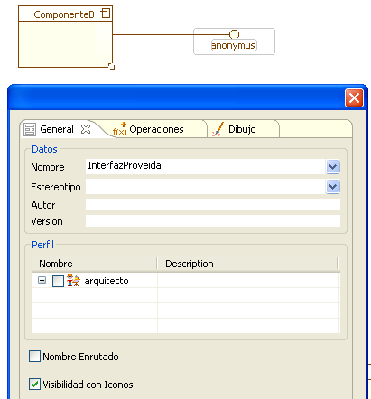
Figura 17. Configuración de la interfaz proveída
La Interfaz Proveída puede dejarse sin asociación como en la imagen anterior, asociarse a una Interfaz o a una Interfaz Requerida. Para estos dos últimos casos se puede suministrar un Estereotipo de la relación.
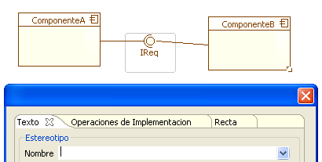
Figura 18. Conectando una interfaz requerida y proveída
Y debido a que las operaciones se encuentran dadas en la Interfaz Proveída o en la Interfaz Requerida, al momento de hacer la conexión solo se necesitan escoger cuales de estas operaciones serán implementadas por la Interfaz Proveída.
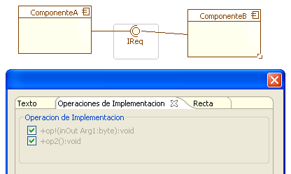
Figura 19. Selección de operaciones de implementación
Puerto: El puerto permite realizar la conexión de la funcionalidad interna de un componente, con sus respectivas interfaces y con el exterior del mismo. Para crear un Puerto se debe seleccionar el icono en forma de rectángulo conectado a dos segmentos de línea.
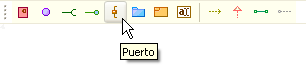
Figura 20. Botón de creación de puerto
Es posible asignar al Puerto un Nombre y los datos de conexión del puerto. Entre estos se encuentra el tipo de dato, el valor por defecto y la dimensión de la variable. La visibilidad del puerto puede ser pública, protegida o privada y se pueden aplicar los modificadores necesarios como se ve en la imagen. La localización permite posicionar el Puerto, respecto a las tres posiciones básicas horizontal y verticalmente. Aún así despues de creado el puerto este puede deslizarse libremente alrededor del componente para ajustarse a las necesidades del diagrama.
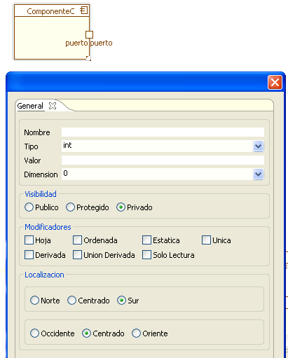
Figura 21. Configuración de puerto
El Puerto al igual que otros elementos gráficos puede cambiar de tamaño al arrastrarse de una esquina mientras esté seleccionado, con el fin de ajustarse a la cantidad de conexiones como por ejemplo en el caso de los puertos bidireccionales o simplemente para mantener la estética del diagrama.
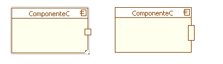
Figura 22. Cambio de tamaño en el puerto
Relación de Dependencia: La Relación de Dependencia permite poner de manera explicita en el diagrama la necesidad de una interfaz para un componente. Se puede usarcomo sustituto para la notación de interfaz requerida. Para crear una relación de dependencia. Para crear una relación de dependencia se debe seleccionar el icono en forma flecha con segmento de línea discontinuo de la barra específica del marco.
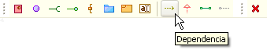
Figura 23. Creación de una relación de dependencia
Para generar la relación, se debe seleccionar el Componente del cual se quiere señalar la dependencia y seguidamente la interfaz del cual es dependiente. Para este caso se creará una Relación de Dependencia entre el Componente2 y la Interfaz Proveída por el Componente1
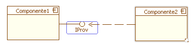
Figura 24. Creando una relación de dependencia a partir de los componentes
Esta relación permite la asignación opcional de un Estereotipo y la
rotulación del rol de cliente y proveedor.
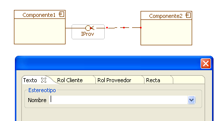
Figura 25. Creando el estereotipo para la relación de dependencia
Relación de Realización
Esta relación indica que un componente implementa una cierta
funcionalidad especificada en una interfaz. Al igual que con la
Relación de Dependencia esta puede ser usada como un
sustituto
para la notación de la interfaz proveída y complementada con
esta
como el sustituto completo para la de interfaz poveída-requerida. Para
crear una relación de realización se debe seleccionar el
icono en
forma de segmento de línea discontinuo con cabeza triangular.

Figura 26. Botón de creación para realización
Posteriormente se debe seleccionar el componente que realizará la implementación y enseguida la interfaz que va a implementar.
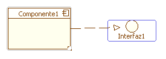
Figura 28. Conectando un componente con una interfaz a través de una realización
Al igual que la Interfaz Proveída cuando se conecta a una Interfaz Requerida, la implementación permite un estereotipo y seleccionar cuales operaciones serán implementadas por el componente, de entre las operaciones pertenecientes a la Interfaz.
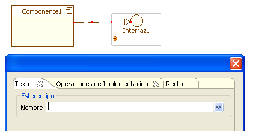
Figura 29. Creando el estereotipo para la realización
Enlace Puerto a Puerto
Falta encontrar documentación clara de lo que es un enlace puerto a puerto